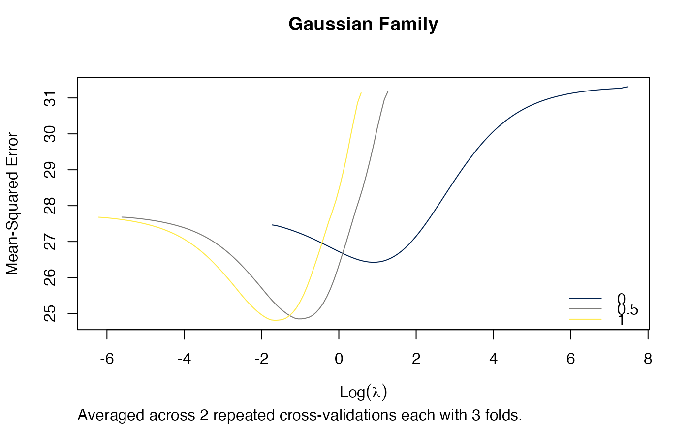
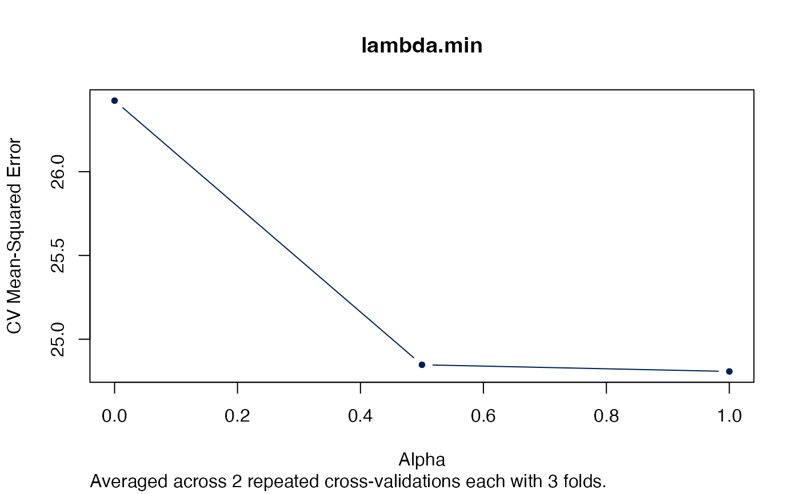

This functions evaluates elastic net repeated cross validation for alpha and
lambda based on glmnet::cv.glmnet().
arcv.glmnet(
x, y,
lambda = NULL,
alpha = seq(0L, 1L, by = 0.1),
nrepcv = 100L, nfolds = 10L, foldid = NULL, balanced = FALSE,
...,
trace.it = interactive()
)
which.min.error(x, s = c("lambda.1se", "lambda.min"), maxnnzero = Inf)
# S3 method for arcv.glmnet
print(x, digits = max(3L, getOption("digits") - 3L), ...)arcv.glmnet object.
response as in cv.glmnet.
numeric, optional user-supplied lambda sequence; default is
NULL and glmnet chooses its own sequence.
numeric, different alpha values that should evaluated (0 =
ridge regression, 1 = lasso regression).
integer(1), number of repeated cross-validations (outer
loop).
integer, number of folds, same as in cv.glmnet.
matrix, an optional matrix with nrepcv rows and
nrow(x) columns containing ids from 1 to nfolds identifying what fold
each observation is in. If given nrepcv and nfolds are ignored.
logical, should classes/status be balanced in the folds
(default: FALSE)?
further arguments passed to cv.glmnet.
integer, if trace.it = 1, then a progress bar is
displayed.
character/numeric, value(s) of the penality parameter lambda.
See glmnet::predict.cv.glmnet() for details.
numeric(1), maximum number of allowed non-zero beta
coefficients. Default is Inf which selects the model with the minimal error
(the measurement error is chosen from all "lambda.min" or "lambda.1se"
results depending on s). If a number is given the model with the lowest
(local) error that has at the most maxnnzero non-zero beta coefficents
is chosen (also based on the given s, as described above). If no model has
less than maxnnzero coefficients the simplest model is chosen and a warning
given.
integer(1), number of digits shown in table.
An object of class arcv.glmnet that extends the rcv.glmnet and
cv.glmnet class.
numeric index of model with minimal error.
Jerome Friedman, Trevor Hastie, Robert Tibshirani (2010). Regularization Paths for Generalized Linear Models via Coordinate Descent. Journal of Statistical Software, 33(1), 1-22. URL https://www.jstatsoft.org/v33/i01/.
Noah Simon, Jerome Friedman, Trevor Hastie, Rob Tibshirani (2011). Regularization Paths for Cox's Proportional Hazards Model via Coordinate Descent. Journal of Statistical Software, 39(5), 1-13. URL https://www.jstatsoft.org/v39/i05/.
# Examples taken from ?"glmnet::cv.glmnet"
set.seed(1010)
n <- 1000
p <- 100
nzc <- trunc(p/10)
x <- matrix(rnorm(n * p), n, p)
beta <- rnorm(nzc)
fx <- x[, seq(nzc)] %*% beta
eps <- rnorm(n) * 5
y <- drop(fx + eps)
set.seed(1011)
# nrepcv should usually be higher but to keep the runtime of the example low
# we choose 2 here
arcvob <- arcv.glmnet(x, y, alpha = c(0, 0.5, 1), nrepcv = 2, nfolds = 3)
#> Loading required package: foreach
#> Loading required package: future
#>
#> Attaching package: ‘future’
#> The following object is masked from ‘package:survival’:
#>
#> cluster
plot(arcvob)
title("Gaussian Family", line = 2.5)

plot(arcvob, what = "lambda.min")
